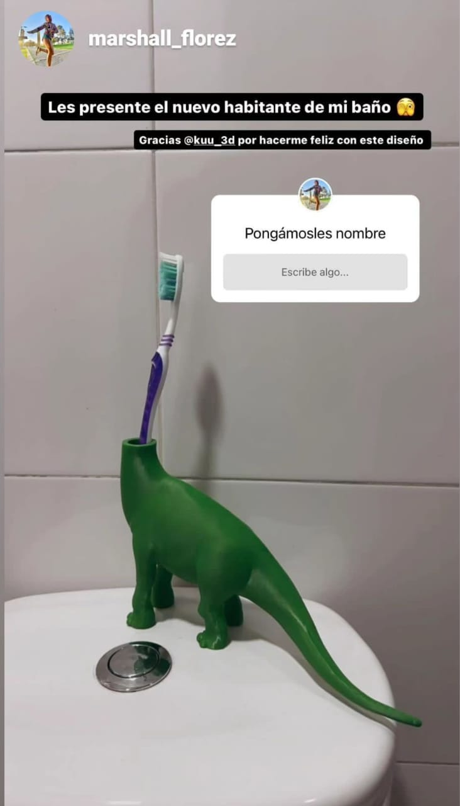

Soporte para ps4
Se desarrolló un soporte para PS4 mediante un proceso que comenzó con la investigación de diseños y necesidades del usuario, seguido por la creación de un modelo 3D para asegurar una adecuada ventilación y estabilidad. Se imprimió un prototipo, ajustando el diseño según las pruebas iniciales. Finalmente, se fabricó el soporte en un material duradero, realizando pruebas finales para garantizar su funcionalidad y estética, listo para su presentación o venta.

soporte para sepillo de dientes
Se diseñó un soporte para cepillo de dientes en forma de dinosaurio, inspirado en la preferencia del cliente por estos animales. El proceso comenzó con la creación de un modelo 3D, asegurando que el diseño fuera tanto atractivo como funcional. Después de imprimir un prototipo, se realizaron ajustes para optimizar la estabilidad y la capacidad de sujeción. Finalmente, se fabricó el soporte en un material adecuado, ofreciendo una solución divertida y práctica para el almacenamiento del cepillo de dientes.